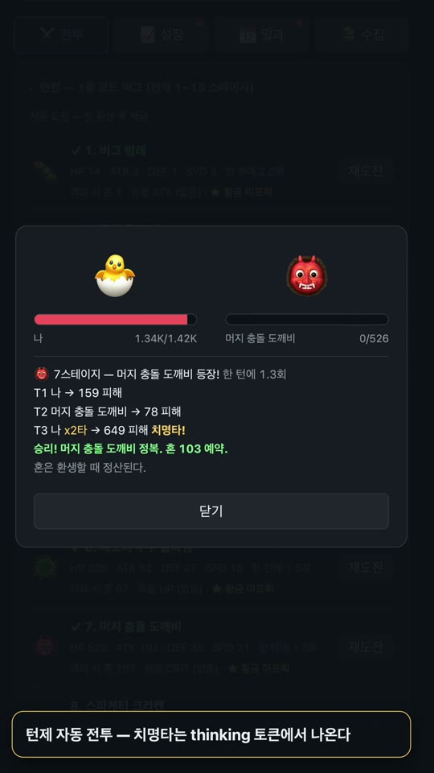
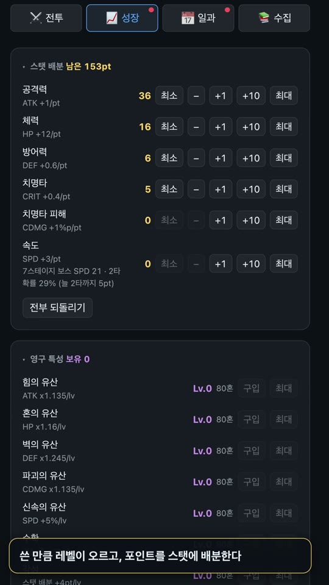
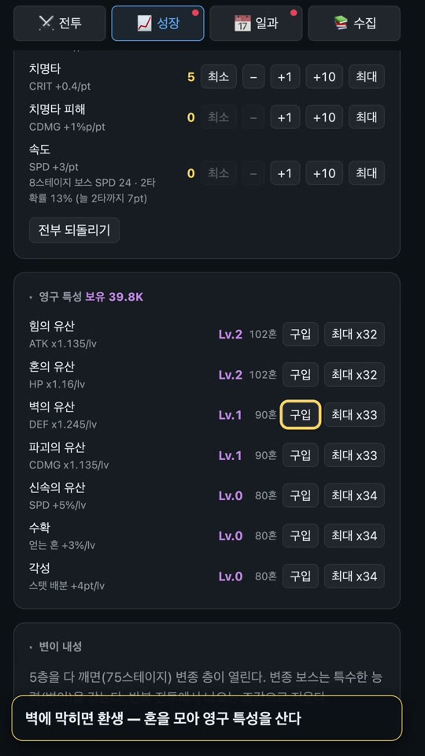
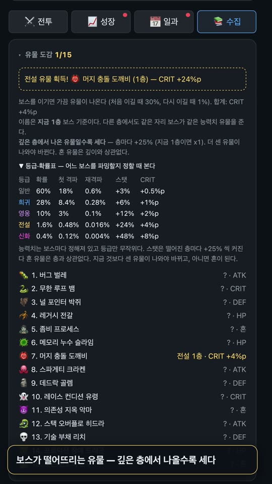
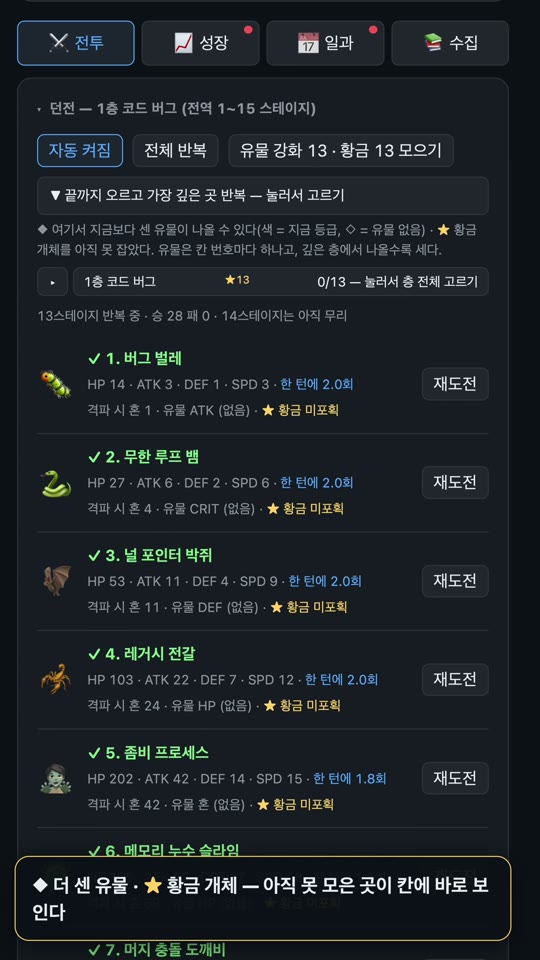
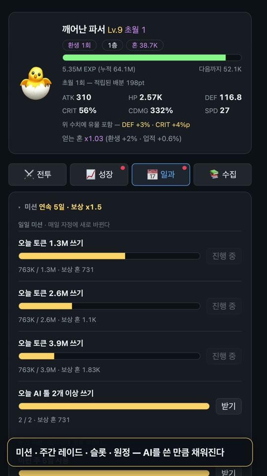

Claude Code·Codex·Gemini CLI 에 쓴 토큰으로 자라는 턴제 RPG입니다. 출력 토큰은 공격력, 캐시는 방어력, thinking 은 치명타가 됩니다. 코딩한 만큼 강해집니다.
로컬 사용 기록의 토큰 수만 읽습니다. 쓰는 방식이 곧 빌드입니다.
버그 벌레부터 루트 권한의 군주까지, 개발자의 적 75종이 던전 보스입니다.

스테이지를 고르면 자동으로 싸웁니다. 속도가 빠르면 먼저 치고, 치명타는 thinking 토큰에서 나옵니다.

레벨마다 받은 포인트를 공격·체력·방어·치명타·속도에 나눕니다. 화력 몰빵도, 버티는 빌드도 됩니다.

벽에 막히면 환생합니다. 모은 혼으로 영구 특성을 사서 다음 판에 더 깊이 내려갑니다.

보스가 가끔 유물을 떨어뜨립니다. 일반부터 신화까지 다섯 등급이고, 깊은 층에서 나올수록 셉니다.

알아서 오르고, 막히면 그 자리에서 유물을 캡니다. 아직 못 모은 곳은 칸에 ◆·★ 로 표시됩니다.

미션과 레이드는 실제로 쓴 토큰으로 찹니다. 저장을 고쳐도 진행도는 바뀌지 않습니다.
Python 3.9 이상만 있으면 됩니다. 표준 라이브러리만 씁니다.
pipx install token-rpgtoken-rpg-tray --startup onpipx install token-rpgtoken-rpg openuv tool install token-rpg·pip install token-rpg 도 됩니다.무료입니다. MIT 라이선스 오픈소스이고, 게임 안에 결제가 없습니다.
아닙니다. 평소대로 코딩한 기록을 읽을 뿐입니다. 환생 기운에 상한이 있어서 토큰을 몰아 써도 빨라지는 데 한계가 있습니다.
게임 화면의 업데이트 버튼을 누르면 됩니다. 메뉴 막대 앱은 새 DMG 를 받아 앱을 직접 갈아끼웁니다. 터미널에서는 token-rpg update 입니다.
기본은 설치한 시점부터 셉니다. token-rpg since 로 언제부터 셀지 바꿀 수 있습니다.